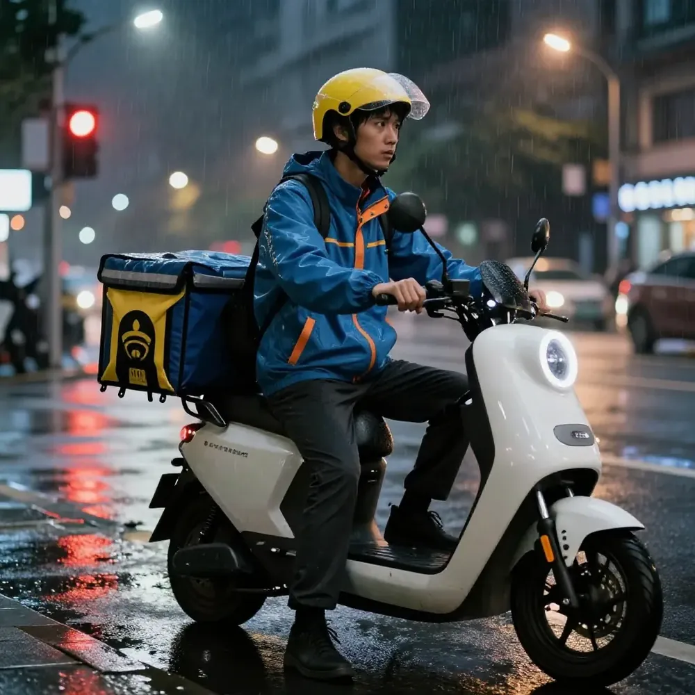
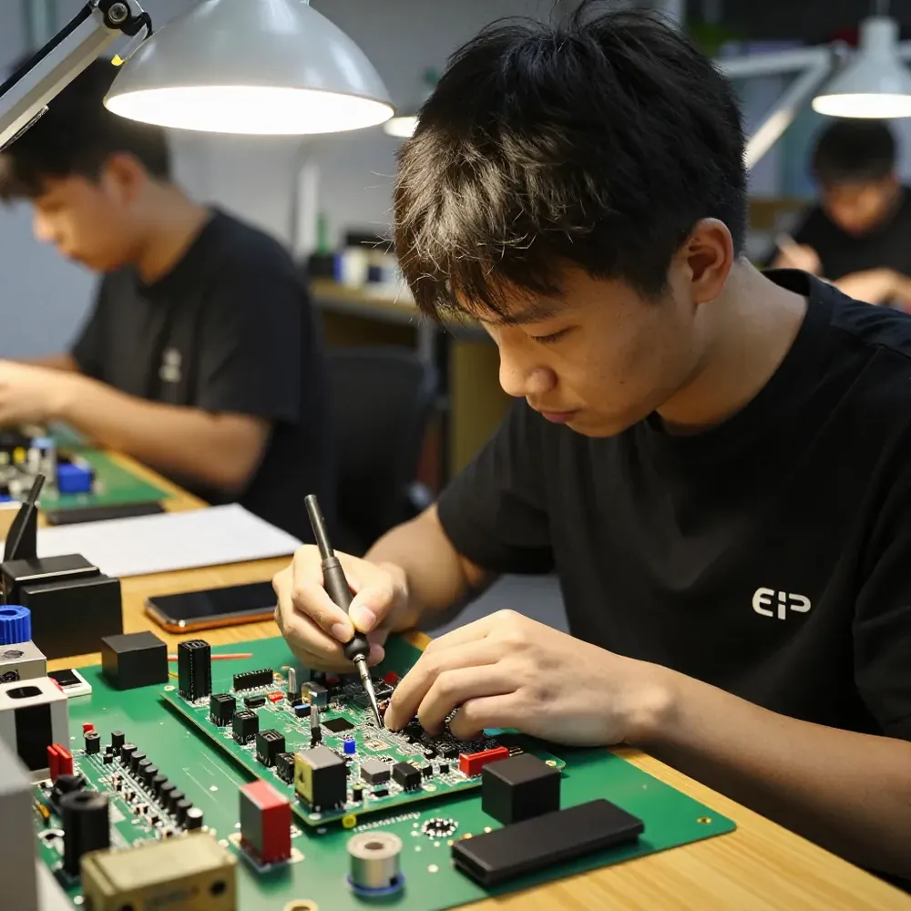
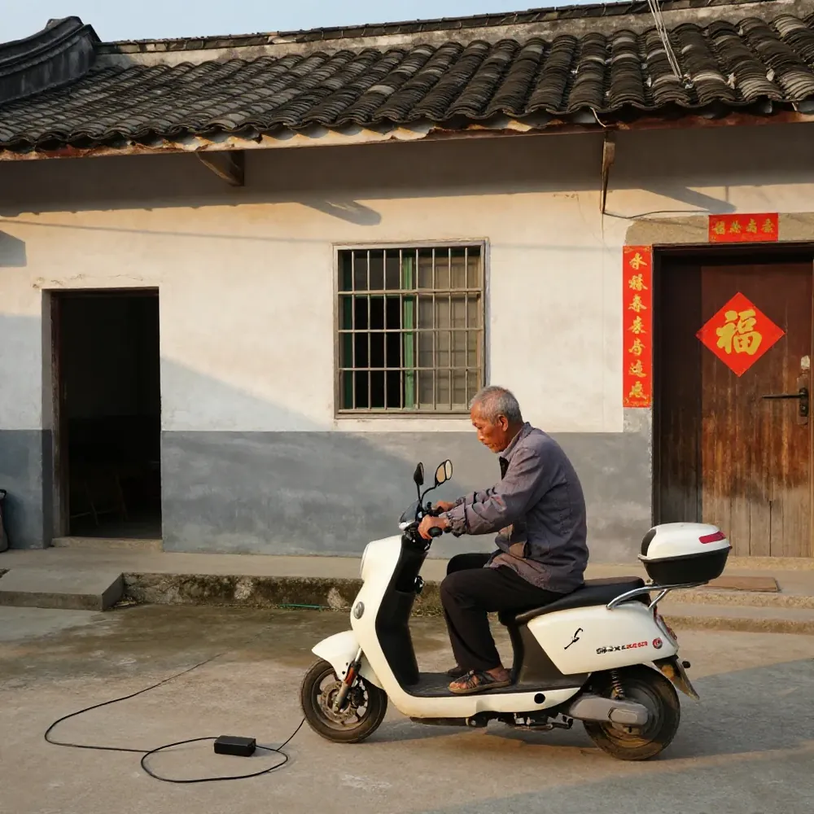
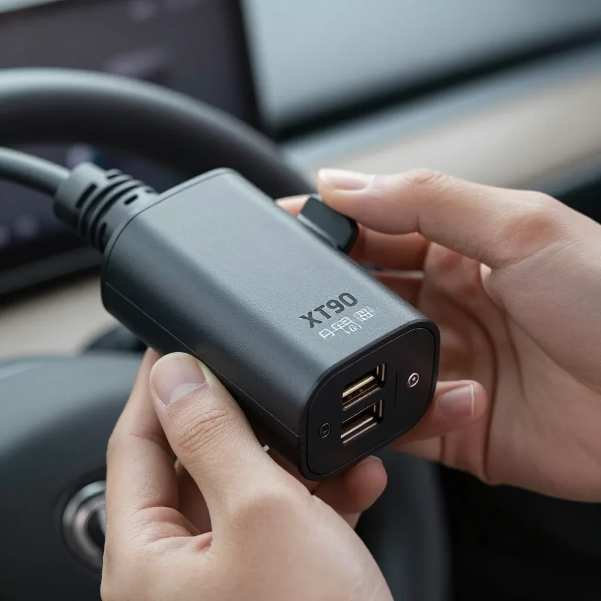

呢件嘢我系前几日先留意到嘅。
闲鱼上面一个卖家「小meng」，卖紧一件黑色嘅便携取电器，叫「电猫充电」。标价大概¥500-1500。一开睇，我以为又系边个华强北嘅野鸡嘢。
但当我拎大个相睇嘅时候——我嘅「生意鼻」即刻动咗。

圖片由 AI輔助創作（Z-Image-Turbo）
一张密密麻麻嘅使用说明，上面写住：
适用品牌：九号、极核、小牛、台达、中兴、华为
电压范围：220V 到 380V
最大功率：7500W
接口：XT90
启动方式：扫码
升级接口：USB（可以OTA远程升级）
我当时即刻谂——呢件嘢，系专门畀外卖骑手用嘅。
我做咗26年贸易，呢种嗅觉系用时间换返嚟嘅。
讲个真实故事：2003年，我哋公司有个做手机配件嘅客户，佢自己组装外置电池。嗰时主流手机系诺基亚，电池唔耐用，但充电宝呢个概念仲未兴起。佢嘅电池卖到外蒙古、俄罗斯远东嗰啲地方，因为嗰边冬天零下30度，原装电池根本顶唔顺。
我嗰时就谂——呢种「极端场景」嘅产品，永远有人要。

圖片由 AI輔助創作（Z-Image-Turbo）
一件产品嘅价值，唔系佢嘅科技有几高，唔系佢嘅功能有幾齊。而系佢能唔能够喺一个「边缘场景」入面，解决一啲「正路方案」解决唔到嘅问题。
呢件¥500嘅便携取电器，就系典型嘅「边缘场景产品」。
边个会买呢件嘢？我谂咗三个群体：
第一，外卖骑手、闪送、快递小哥。
呢班人日均跑100-200公里，经常去到陌生区域，搵唔到自己熟悉嘅换电柜。部车半路冇电嘅时候，你叫佢行返5公里去搵换电柜？外卖超时一分钟扣¥2，客人投诉再扣¥50。佢哋对「等待」嘅容忍度极低，对「即刻救命」嘅嘢极愿意畀钱。
一件¥500嘅嘢，如果可以帮佢喺关键嘅30分钟入面唔使等待，佢哋觉得平过叫一单外卖。

圖片由 AI輔助創作（Z-Image-Turbo）
第二，城乡结合部、山区、偏远地区嘅用户。
我老家海丰，乡镇上充电桩覆盖率低得可怜。我叔父部电动车，半路冇电系常态。如果佢有一件呢种嘢，可以喺亲戚屋企、餐厅、便利店，借任何一个充电器续命，佢会觉得呢¥500系佢一年入面最抵嘅保险。
第三，房车旅行、户外露营爱好者。
呢批人已经买咗便携储能，但发现直接用储能充电动车效率低。呢件嘢可以将任何交流电来源（发电机、太阳能、家庭电）转成电动车充电——系「储能生态」嘅补充件。

圖片由 AI輔助創作（Z-Image-Turbo）
但最令我兴奋嘅，系呢件嘢背后嘅「市场结构」。
你谂下：头部品牌（铁塔、e换电）做换电柜，净係做城市核心区；巨头（华为、特来电）做充电桩，净係做有商业回报嘅地方。呢件嘢填补嘅，恰恰係「冇人服务嘅场景」。
呢个市场结构，我好熟悉。1998年我做贸易，国企睇唔上嘅小订单，我哋接住做；2000年代电商崛起，传统渠道睇唔上嘅长尾SKU，我哋一个个拣；2008年金融危机，大厂收缩战线，剩低嘅外贸尾单我哋食晒；而家AI时代，大厂卷紧万亿参数嘅大模型，但真正落地嘅最后一公里——呢件¥500嘅小小取电器，恰恰就系我哋呢种「识用、识卖、识服务」嘅人嘅机会。
巨头做唔到嘅，往往就系我哋嘅机会。
有冇得做？我认真谂咗下，畀大家四个判断维度：
有利因素：
- 毛利率50%以上（BOM成本¥150-300，售价¥500-1500）
- 用户痛点真实存在，外卖骑手刚需
- 进入门槛低，迭代快（OTA升级能力可以让一件硬件持续升级）
- 跨境可以复制（东南亚、非洲电单车市场更大）
挑战：
- 安全隐患（7500W高功率，过充起火风险）
- 政策风险（电动车充电有国家标准 GB/T）
- 知识产权（多品牌协议破解可能侵权）
- 售后压力（电子产品故障率难控）
进入策略：
- MVP阶段：闲鱼+拼多多，月销100-200部试水
- 增长阶段：绑定外卖平台合作（美团、达达骑手装备店）
- 品牌阶段：建立「应急取电」品类认知，跨境出海东南亚
呢件嘢畀我最大嘅启示，系一种「创业态度」。
呢件产品嘅发明者，可能只系深圳华强北一个普通电子工程师，月入两万，养住一家四口。但佢对电动车充电协议嘅熟悉，对外卖骑手痛点嘅理解，对闲鱼流量嘅嗅觉——呢种「贴地」嘅能力，就系AI永远学唔到嘅嘢。
大模型可以做文案、做设计、做编程，但做唔到喺雨夜街头畀一个外卖骑手递上一部取电器。
呢种「应急」嘅生意，永远都有市场。问题只系你愿不愿意走落街、蹲落嚟、听住用家讲嘢。
我谂分享呢篇嘢畀大家，系因为——而家嘅经济环境，好多人谂紧「AI会唔会取代我」。但其实AI取代嘅，係「标准化嘅中段工作」。
真正取代唔到嘅，系：
- 听得明用家讲嘅「救命」呢两个字嘅人
- 蹲喺街头同骑手倾偈嘅人
- 喺巨头盲区搵到机会嘅人
- 愿意从¥500嘅小生意开始做起嘅人
呢啲，全部都系AI嘅盲区。
永远喺主流市场嘅边缘搵食，永远喺巨头嘅盲区掘金。呢句话，我送畀你。
I only noticed this thing a few days ago.
A seller on Xianyu called "Xiao meng" is selling a black portable power draw unit called "Dianmao Charging". The listed price is around ¥500–1500. At first glance I assumed it was another of those back-alley jobs from Huaqiangbei.
But when I enlarged the photos — my "business nose" twitched immediately.
A densely printed instruction sheet, on it:
Compatible brands: Segway-Ninebot, Jihe, Niu, Delta, ZTE, Huawei
Voltage range: 220V to 380V
Maximum power: 7500W
Connector: XT90
Activation: scan the QR code
Upgrade port: USB (OTA remote upgrades supported)
My first thought was — this thing is made specifically for delivery riders.
I have done 26 years of trade. This kind of instinct is bought with time.
Here is a true story. In 2003 we had a client who made phone accessories and assembled his own external batteries. Nokia was the mainstream phone then, the batteries did not last, and the power bank was not yet a thing. He sold his batteries to Outer Mongolia and the Russian Far East, because winter there is minus 30 and the original batteries simply could not cope.
Even then I thought — products for "extreme scenarios" will always find buyers.
The value of a product is not how advanced its technology is, nor how complete its features are. It is whether it can solve, inside an "edge scenario", a problem the proper solutions cannot solve.
This ¥500 portable power draw unit is a textbook "edge scenario product".
Who buys this thing? I thought about three groups:
First, delivery riders, instant couriers, parcel couriers.
These people cover 100–200 km a day and often end up in unfamiliar areas where they cannot find a battery-swap cabinet they know. When the bike dies halfway, are you going to tell them to walk 5 km back to a swap cabinet? A late delivery costs ¥2 a minute, and a customer complaint costs another ¥50. Their tolerance for "waiting" is extremely low, and they will pay readily for anything that saves them right now.
A ¥500 device that spares them a 30-minute wait in a critical moment feels cheaper to them than ordering one takeaway.
Second, users on the urban fringe, in the mountains, in remote areas.
My hometown is Haifeng, and the charging-pile coverage in the townships there is pitifully low. My uncle's electric bike running out of power halfway is normal. If he had one of these, he could borrow any charger at a relative's place, a restaurant or a convenience store and get going again — he would think that ¥500 was the best insurance he bought all year.
Third, RV travellers and outdoor camping fans.
These people already own portable power stations, but they find that charging an electric bike straight from a power station is inefficient. This thing converts any AC source — generator, solar, household mains — into an e-bike charge. It is an add-on to the "energy storage ecosystem".
But what excited me most was the "market structure" behind this thing.
Think about it: the leading brands (China Tower, e-swap) build battery-swap cabinets only in core urban districts; the giants (Huawei, TELD) build charging piles only where there is a commercial return. What this device fills is precisely "the scenarios nobody serves".
This market structure is very familiar to me. In 1998 I was trading: the small orders the state-owned firms looked down on, we took. In the 2000s e-commerce rose: the long-tail SKUs the traditional channels looked down on, we picked them one by one. In the 2008 financial crisis the big factories pulled back their lines, and we swallowed all the leftover export orders. Now, in the AI era, the big firms are grinding away at trillion-parameter models, but the last mile that actually lands — this little ¥500 power unit is exactly the opening for people like us who "know how to use it, know how to sell it, know how to service it".
What the giants cannot do is usually our opportunity.
Is there money in it? I thought it through properly and will give you four dimensions to judge by:
Favourable factors:
- Gross margin above 50% (BOM cost ¥150–300, selling price ¥500–1500)
- The user pain point is real; delivery riders need it
- Low barrier to entry, fast iteration (OTA upgrades let one piece of hardware keep improving)
- It can be copied across borders (the e-bike markets in Southeast Asia and Africa are even bigger)
Challenges:
- Safety (7500W is high power; overcharging risks fire)
- Policy risk (e-bike charging has a national standard, GB/T)
- Intellectual property (breaking the protocols of several brands may infringe)
- After-sales pressure (failure rates on electronics are hard to control)
Entry strategy:
- MVP stage: Xianyu plus Pinduoduo, 100–200 units a month to test the water
- Growth stage: tie up with delivery platforms (Meituan, Dada rider equipment shops)
- Brand stage: build the category awareness of "emergency power draw" and take it cross-border into Southeast Asia
The biggest lesson this thing gave me is a kind of "entrepreneurial attitude".
The inventor of this product is probably just an ordinary electronics engineer in Huaqiangbei, Shenzhen, earning twenty thousand a month and supporting a family of four. But his familiarity with e-bike charging protocols, his understanding of delivery riders' pain points, his feel for Xianyu traffic — that "down on the ground" ability is exactly what AI can never learn.
A large model can write copy, do design, write code, but it cannot hand a delivery rider a power draw unit on a rainy night in the street.
This kind of "emergency" business will always have a market. The only question is whether you are willing to go downstairs, squat down, and listen to users talk.
I wanted to share this because — in today's economy, a lot of people are wondering "will AI replace me". But what AI replaces is "standardised middle-section work".
What it truly cannot replace:
- People who can hear the word "lifesaver" when a user says it
- People who squat on the street and chat with riders
- People who find opportunities in the giants' blind spots
- People willing to start from a ¥500 business
All of that is AI's blind spot.
Always make your living at the edge of the mainstream market. Always dig for gold in the giants' blind spots. That line is my gift to you.